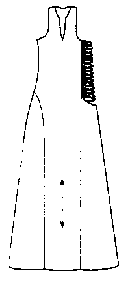

This garment is referred to in Museo de Telas Medievales as Saya encordada de Leonora de Castilla, Reina de Arag�n (?-1244). This or a similar dress is ascribed to Isabela of Castille in Tarrant. It laces up the side.
Return to Contents
Some Clothing of the Middle Ages - Tunics - Leonora de Castille's Dress, by I. Marc Carlson, Copyright 1996,1998 This code is given for the free exchange of information, provided the Author's Name is included in all future revisions, and no money change hands-